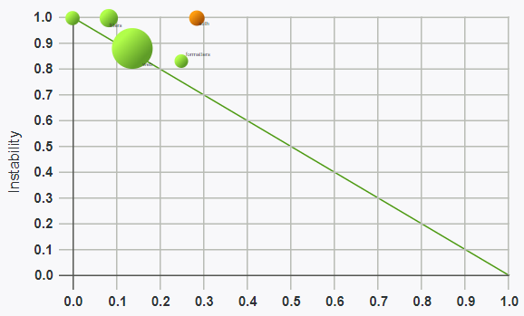
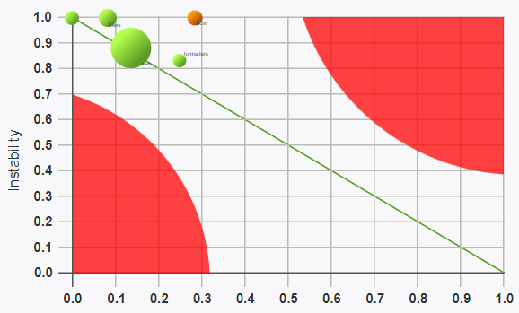

In order to apply a principle correctly you should understand it.
Abstraction = generalization of essential, removal of non-essential.
What for?
To fit unfittable

into...

TTL of the item is ~20 sec.
We can not operate with high number of items:
- 7±2 items (George Miller, 1989).
- 4±1 (Cowan, 2001).
- Number depends on items.
Trick: chunking
88003334434
8-800-333-44-34
Architecture is needed to deal with complex systems.
For our brain too complicated comes way too fast.
Layers!
Five entities in a layer. Perfect!
More than 5 layers...


Abstraction is a tool, not a goal.
Abstraction is necessary evil.
Cohesion / coupling
Any simple validation rules / markers?
SOLID
© 2000 Robert Martin
- SRP
- OCP
- LSP
- ISP
- DIP
Not the topic of the talk.
What is a "package"?

Grouped code items (classes).
- Modules
- Libraries
- Microservices
Right questions?
- How to design packages?
- How to use packages (dependencies)?
Does Cohesion / coupling apply to packages?
Yes!
Can we use same SOLID-markers?
Not really...
Package Cohesion (design)
REP, CCP, CRP
Package Coupling (usage)
ADP, SDP, SAP
Reuse-Release Equivalency Principle
The granule of reuse is the granule of release
Group and prepare code to be reused.
Release with proper versioning (SemVer).
Common Closure Principle
Classes that change together are packaged together
The change should be within the package.
Common Reuse Principle
Classes that are used together are packaged together
Package should be focused.
Client should either use everything or nothing.
Sounds good?

Reality is harsh :(

On early stages focus on CCP and REP.
Acyclic Dependencies Principle
The dependency graph of packages must have no cycles
Cycles are causing cascading problems.
How to check for cycles?
- Draw directed graph.
- Look at it :)
There is clue/graph-composer.
But (PR #45) should be applied to exclude non-interesting packages.

The less dependencies the simpler everything is...
How to break the cycle?
- DIP — use dependency inversion via interface.
- CRP — move the interface into separate package.
Or rethink the package...
Stable Dependencies Principle
Depend in the direction of stability
You can't build stable thing on unstable base.
Can we measure (in)stability?
I = Ce / (Ce + Ca)
- I — Instability. 1 — unstable, 0 — stable.
- Ce — Efferent Coupling. Number of classes that depend on the package.
- Ca — Afferent Coupling. Number of classes package depends on.
How to increase stability?
Stable Abstractions Principle
A package abstractness should increase with stability
Stable packages are abstract.
Flexible packages are concrete.
Can we measure abstractness?
A = Na / Nc + Na
- A — abstractness. 0 — concrete, 1 — abstract.
- Na — number of abstract entities in a package.
- Nc — number of concrete entities in a package.
- Abstract packages → stable: safe to depend on them.
- Concrete packages → unstable: easy to change them.
D-metric
X axis — abstractness, Y axis — instability.
D = | A + I − 1 |
Distance from main line.
0 is good.
1 is bad.
Good and bad
Sometimes 0, 0 is OK. Strings, arrays, stdlib.
PHP Tools
Same as SOLID, these principles and metrics are not dogmas but tools.
Correct design results in explosive increase in number of packages. It is scary.
Principles are there to keep you away from either left-pad or monolith.
These tools should help producing code that breaks less.
Questions time!
- sam@rmcreative.ru
- @sam_dark
- https://slides.rmcreative.ru/2019/bgphp-packages/
- Wikipedia: Short-term memory
- c2 wiki
- Principles of OOD
- Agile Software Development, Principles, Patterns, and Practices — Robert C. Martin
- Principles of Package Design — Matthias Noback